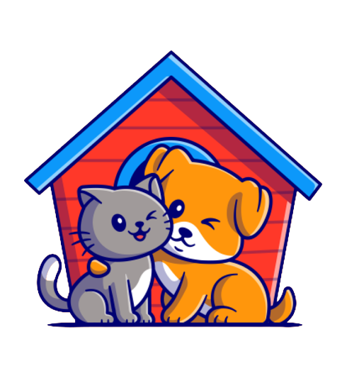

Welcome to Our Pet Adoption Community At Adopt_A_Friend, we believe in the power of companionship, and there's no better friend than a furry one. Our mission is simple: to connect loving homes with loving hearts. Whether you're looking for a loyal canine companion, a playful feline friend, or a furry family member of any kind, you've come to the right place.
